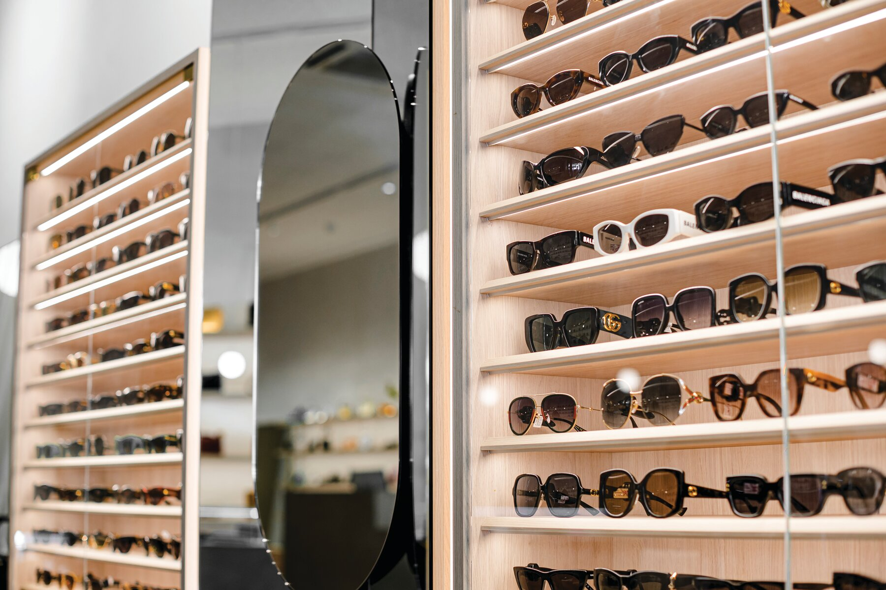

PROFIL NAWIERZCHNIOWYA02966L9010OD
MICRO-PLUS
Mała wysokość. Wiele możliwości.
WYKOŃCZENIA
- Szerokość × wysokość
- 15,6 × 6 mm
- Szerokość klejenia LED
- 11,2 mm
- Możliwe IP oprawy
- 20 / 67
DŁUGOŚCI KATALOGOWE
1000 / 2005 / 3010 mm
ZASTOSOWANIA

Fotografia zastosowania · KLUŚŚWIATŁO W DETALU
Światło dla ekspozycji.
Podświetlone krawędzie półek eksponują oprawki okularów.